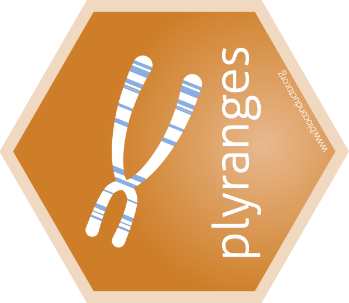

class: center, middle, inverse, title-slide # <br>fluent genomic data analysis with R/Bioconductor ### <span class="citation">@_StuartLee</span> <br> Monash University ### 2018-07-27 --- class: center # Bioconductor infrastructure is powerful... <div style = "display:block; margin-left:auto; margin-right:auto"> <img src="https://raw.githubusercontent.com/Bioconductor/BiocStickers/master/Bioconductor_1.0/Bioconductor.png", width = 200> <img src="https://raw.githubusercontent.com/Bioconductor/BiocStickers/master/GenomicRanges/GenomicRanges.png" width = "200"> <img src="https://raw.githubusercontent.com/Bioconductor/BiocStickers/master/IRanges/IRanges.png" width = "200"> </div> .large[ Bioconductor abstractions enable **developing** software for biology! ] --- # ... however ```r pkgs_to_get_started <- c("S4Vectors", "IRanges", "GenomicRanges") pkg_classes <- function(.) methods::getClasses(asNamespace(.)) n_classes <- pkgs_to_get_started %>% lapply(pkg_classes) %>% lengths() %>% sum() n_classes ``` ``` [1] 143 ``` ```r n_methods <- length(methods(class = "Ranges")) n_methods ``` ``` [1] 212 ``` .large[A lot is expected of an R beginner to **analyse** data with Bioconductor] --- class: inverse, center, middle # How far can a user get with just a GRanges? --- # GRanges are tidy! <img src="GRanges.png" style="display: block; margin: auto;" /> --- # Design a grammar <img src="design.png" width="1080" style="display: block; margin: auto;" /> --- # Include genomic semantics .large[ - **arithmetic**: mutating/shifting/re-sizing/flanking/coverage - **restriction**: filtering by metadata or ranges - **aggregation**: summarizing over groups/overlaps/unions - **merging**: combining ranges based on overlaps/nearest neighbors _Biorxiv 327841_ ] --- # Changing coordinates .large[ The start, end, and width of a GRanges of are mutually dependent. How can we express changes to width with respect to ranges?] ```r exons %>% mutate(width = 2 * width) ``` ``` GRanges object with 459752 ranges and 3 metadata columns: seqnames ranges strand | <Rle> <IRanges> <Rle> | [1] chr1 11874-12581 + | [2] chr1 12613-12830 + | [3] chr1 13221-15598 + | [4] chr1 14362-15297 - | [5] chr1 14970-15107 - | ... ... ... ... . [459748] chrY 59338754-59338965 + | [459749] chrY 59338754-59338965 + | [459750] chrY 59340194-59340363 + | [459751] chrY 59342487-59344490 + | [459752] chrY 59342487-59344490 + | name score tx_id <character> <numeric> <character> [1] NR_046018_exon_0_0_chr1_11874_f 0 NR_046018 [2] NR_046018_exon_1_0_chr1_12613_f 0 NR_046018 [3] NR_046018_exon_2_0_chr1_13221_f 0 NR_046018 [4] NR_024540_exon_0_0_chr1_14362_r 0 NR_024540 [5] NR_024540_exon_1_0_chr1_14970_r 0 NR_024540 ... ... ... ... [459748] NM_002186_exon_6_0_chrY_59338754_f 0 NM_002186 [459749] NM_176786_exon_7_0_chrY_59338754_f 0 NM_176786 [459750] NM_002186_exon_7_0_chrY_59340194_f 0 NM_002186 [459751] NM_002186_exon_8_0_chrY_59342487_f 0 NM_002186 [459752] NM_176786_exon_8_0_chrY_59342487_f 0 NM_176786 ------- seqinfo: 93 sequences from an unspecified genome; no seqlengths ``` --- ## Anchoring operator An anchor decorates a GRanges and changes downstream behaviour: ```r exons %>% anchor_center() %>% mutate(width = 2*width) ``` ``` GRanges object with 459752 ranges and 3 metadata columns: seqnames ranges strand | <Rle> <IRanges> <Rle> | [1] chr1 11697-12404 + | [2] chr1 12558-12775 + | [3] chr1 12626-15003 + | [4] chr1 14128-15063 - | [5] chr1 14935-15072 - | ... ... ... ... . [459748] chrY 59338701-59338912 + | [459749] chrY 59338701-59338912 + | [459750] chrY 59340151-59340320 + | [459751] chrY 59341986-59343989 + | [459752] chrY 59341986-59343989 + | name score tx_id <character> <numeric> <character> [1] NR_046018_exon_0_0_chr1_11874_f 0 NR_046018 [2] NR_046018_exon_1_0_chr1_12613_f 0 NR_046018 [3] NR_046018_exon_2_0_chr1_13221_f 0 NR_046018 [4] NR_024540_exon_0_0_chr1_14362_r 0 NR_024540 [5] NR_024540_exon_1_0_chr1_14970_r 0 NR_024540 ... ... ... ... [459748] NM_002186_exon_6_0_chrY_59338754_f 0 NM_002186 [459749] NM_176786_exon_7_0_chrY_59338754_f 0 NM_176786 [459750] NM_002186_exon_7_0_chrY_59340194_f 0 NM_002186 [459751] NM_002186_exon_8_0_chrY_59342487_f 0 NM_002186 [459752] NM_176786_exon_8_0_chrY_59342487_f 0 NM_176786 ------- seqinfo: 93 sequences from an unspecified genome; no seqlengths ``` --- ## Functions are explicit about genomic features and their intentions ```r exons %>% flank_downstream(2L) exons %>% anchor_3p() %>% mutate(width = 2*width) exons %>% shift_upstream(10L) ``` --- # Merging many GRanges .large[ - Reimagine overlap/nearest neighbour operations as table joins - Carry over metadata - Flatten API via function calls ] ```r join_overlap_inner(a, b) join_overlap_inner_within(a, b) join_overlap_inner_directed(a, b) ``` --- # Overlap Joins <img src="olap.png" style="display: block; margin: auto;" /> --- ## Composing workflows requires endomorphism ```r cvg_summary <- exons %>% compute_coverage() %>% filter(score > 0) %>% group_by(seqnames) %>% summarise(score = mean(score)) cvg_summary ``` ``` DataFrame with 49 rows and 2 columns seqnames score <Rle> <numeric> 1 chr1 1.94300279971585 2 chr1_gl000191_random 4.5 3 chr1_gl000192_random 1 4 chr10 2.10148337595908 5 chr11 2.01503067484663 ... ... ... 45 chrUn_gl000222 1.69230769230769 46 chrUn_gl000223 1.92307692307692 47 chrUn_gl000228 4.38095238095238 48 chrX 2.28463505346351 49 chrY 4.68952007835455 ``` --- # Summary .large[ - GRanges are tidy!!! - A cognitive framework for playing with GRanges - A stepping stone from tidyverse to Bioconductor - Learn more at workshop today at 4pm in VC206 ] --- # Acknowledgements - **Michael Lawrence** - **Di Cook** - Matt Ritchie - Charity Law - Shian Su - Earo Wang Development: https://github.com/sa-lee/plyranges Docs: https://sa-lee.github.io/plyranges/ Contributions/feedback welcome from the Bioconductor community! --- # BiocAsia <img src="BioCAsia.png" width="300" style="display: block; margin: auto;" /> .large[29-30 November in Melbourne, Australia]